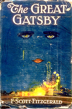

O Grande Gatsby
O romance “The Great Gatsby” retrata uma geração do jazz e mostra a contradição do sonho americano junto com um drama amoroso. Além disso, o tema central é o homem americano ambicioso de um elevado status, mas que acaba em decadência. A busca pelo dinheiro, por um futuro de progresso, porém ilusório. Filho da família Carraway próspera e importante da cidade do Middle West, o jovem Nick vivia em West Egg, foi marcado por uma frase que seu pai lhe dissera quando era pequeno “antes dele pensar em criticar alguém deveria lembrar que nem todos tiveram a mesmas chances que ele teve” era um jovem universitário normal que muitos acham que estava envolvido com política porque conhecia pessoas desse meio. Graduado pela New Haven em 1915, logo depois o jovem participou da Grande Guerra. Mais tarde, foi para o Leste aprender o ofício de corretor de fundos, lá morou em uma casa que ficava entre duas mansões entre elas a do senhor Gatsby. Convidado para jantar com Tom e Dayse Buchanan que antes vivam em Chicago, começou a descobrir coisas sobre eles, Daisy era filha de um primo de segundo grau e Tom era conhecido universidade; Miss Jordan Baker que também estava no jantar era uma amiga de adolescência de Dayse. Depois do jantar o telefone tocou, Tom e Dayse saíram da sala. Baker então contou que Tom tinha uma mulher qualquer em Nova Iorque e quando começou a falar sobre o Senhor Gatsby, Tom e Dayse retornaram à sala. Miss Baker participaria de um torneio de esportivo, em Westchester no dia seguinte, por isso teria que ir embora. Numa tarde, Nick foi com Tom para Nova Iorque, no caminho pararam em uma garagem onde George B.Wilson trabalhava com compra e venda de carros. Tom havia combinado de comprar um carro, mas ainda estava em reparo. Nesse momento, desceu uma moça loira, esposa de Wilson. Quando Wilson se distanciou Tom e a mulher marcaram um encontro. Assim, Tom, Nick e a senhora Wilson foram para um apartamento em Nova York, lá ela convidou várias pessoas. Os convidados chegaram e Myrtle Wilson já estava no estado diferente depois de tanto uísque, Catherine sua irmã disse que nenhum deles aguentavam a pessoa com quem está casado. Se fosse Nick ele pediria o divórcio, Myrtle respondeu que Dayse era católica e por isso não permitia o divórcio. Todas as noites havia música na casa do misterioso vizinho. Homens e mulheres andavam para cá e para lá com o champanhe. Na hora da maré cheia, os convidados mergulhavam da torre da sua jangada. Gatsby era o modelo do self-made man, dono de uma grande fortuna, uma lenda de uma América rica que era impulsionado pelo ritmo do jazz, as máquinas de Detroit e o cinema de Hollywood. A primeira noite que Nick foi à casa de Gatsby quando convidado pelo próprio. Depois eram frequentes suas idas às festas. Entretanto, logo descobre a infelicidade de seu "exemplo ideal", que mantinha um amor pela mulher do milionário Tom. Durante cinco anos Gatsby sonhou com a perfeição, desperdiçou a sua vida num sonho impossível guardou seu passado e não percebeu que haveria erros no seu futuro, quando percebeu era tarde demais. Gatsby queria Daisy, uma mulher que esperava um homem que a poderia fornecer estabilidade financeira e segurança que ela necessitava. Porém, Daisy ficou com alguém como ela, rico, manipulador e egoísta; e não quem ela realmente queria Gatsby. Tom e Dayse foram o responsável pela destruição do sonho de Gatsby e se esconderam atrás do dinheiro. Igual a Gatsby, Nick tinha um sonho que acreditava ser verdadeiro.